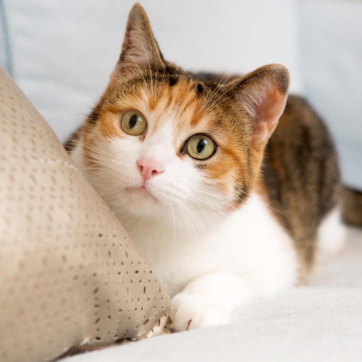

Ett balanserat foder anpassat för ditt djurs ålder, vikt och aktivitetsnivå är avgörande för dess hälsa. Undvik matrester och godis som kan skada djuret, som choklad eller lök. Kontrollera vikten regelbundet för att minska risken för sjukdomar kopplade till övervikt eller undernäring.
Dålig tandhälsa kan leda till smärtsamma problem som tandköttsinflammation och tandlossning. Borsta djurets tänder regelbundet med en anpassad tandkräm och ge tuggleksaker som främjar renare tänder. Veterinärkontroller kan hjälpa till att förebygga större problem.


Parasiter som loppor, fästingar och maskar kan orsaka obehag och sjukdomar hos ditt djur. Kontrollera pälsen efter promenader i naturen och använd förebyggande behandlingar som fästingmedel och avmaskning. Dessa produkter kan ofta anpassas efter djurets vikt och behov.
Vaccinationer är viktiga för att skydda ditt djur mot smittsamma och farliga sjukdomar som parvovirus, valpsjuka och kattpest. Ett uppdaterat vaccinationsschema minskar risken för att ditt djur blir allvarligt sjukt. Diskutera med veterinären vilka vaccinationer som passar ditt djurs ålder och livsstil.